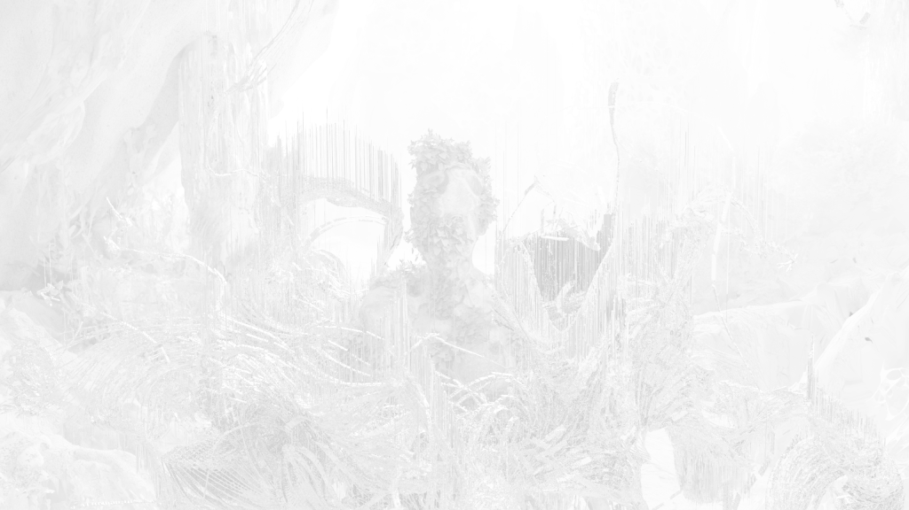
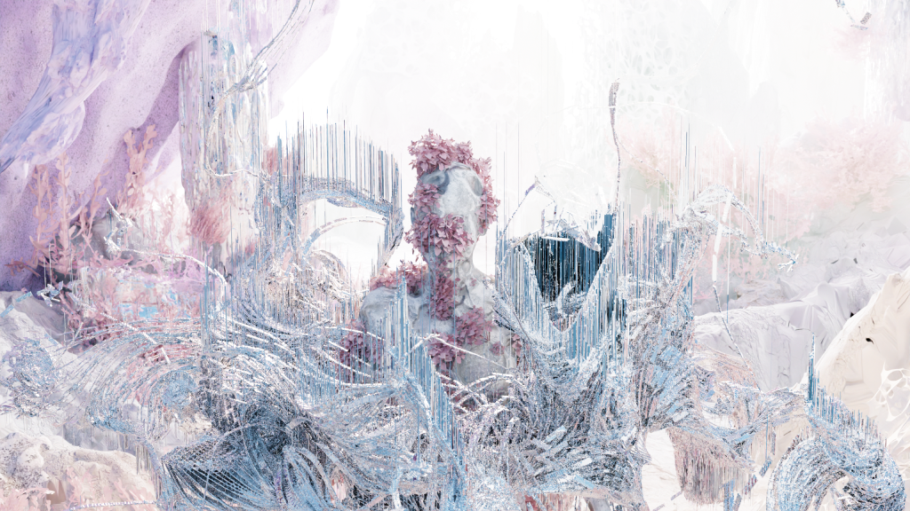

MIMESIS
The Shape of AI
DIHITAL ART
CONCEPT DESIGN
CONCEPT DESIGN & DIGITAL CLOTH
关于复制人是否会梦见电子羊，这个问题一直是科学界的谜题。随着科技的进步，人工智能的计算能力逐渐增强，生成式人工智能的发展使其逐步融入人类生活的方方面面，成为我们的“工具”。然而，随着越来越多AIGC生成工具的出现，其被滥用的现象也愈发猖獗。在这个智能化时代，我们是否应该重新思考人与人工智能的关系？或许，它们已不再是可以随意舍弃的工具，而是成为了我们的“伙伴”，我们的“影子”。
因此，这款服饰的创意概念是“反机械，生命感”。我们将AI作为一种服装，穿戴在身上，摆脱机械外壳，重塑新生命——从而，我们也与AIGC形成了一种共生关系。
Turn AI into clothing, treat it as our companion, and live with it.
ANTI-MECHANICAL SENSE OF LIFE
MIMESIS
DIGITAL-CLOTH DESIGN